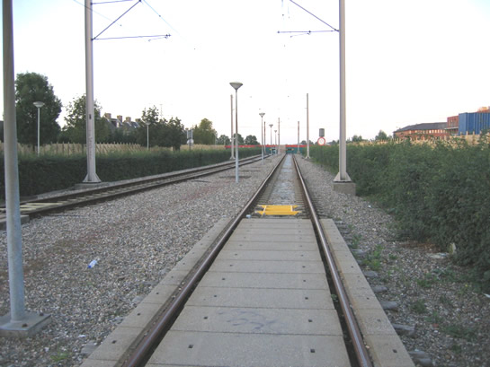
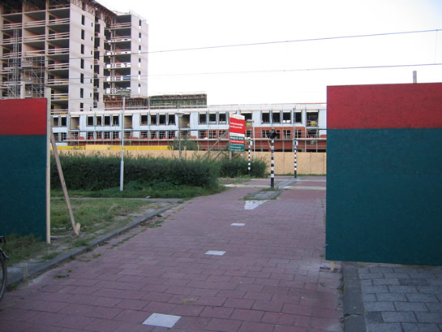
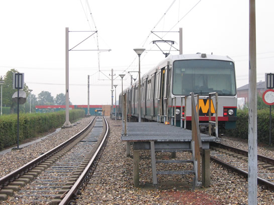
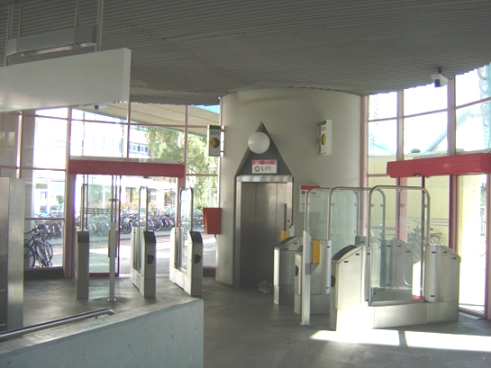
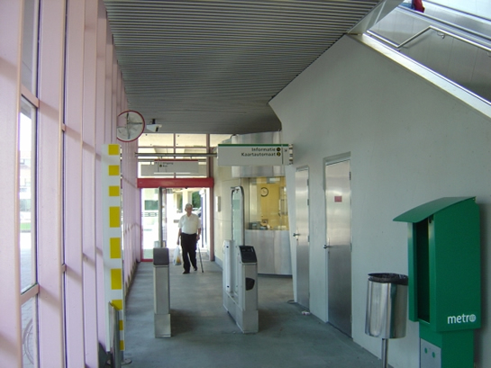
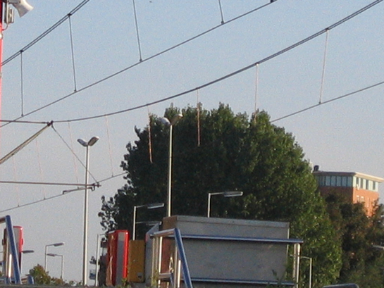

Einde 'Tochten Oost' in zicht en ander nieuws...
- vrijdag 12 december 2008 09:08
- Geschreven door Joachim
De kruising aan de oostzijde van station de Tochten, 'Tochten Oost', zal binnenkort verleden tijd zijn. Ook de nabijgelegen uitloopsporen, zullen worden weggehaald. Deze week werd een begin gemaakt met de voorbereidingen. De bordessen die er stonden, zijn weggehaald. Wat er voor in de plaats komt zijn geheel nieuwe sporen, die zullen aansluiten op de Nesselandelijn, welke in het najaar van 2005 gereed zal komen.
Rondom de uitloopsporen en kruising Tochten Oost zijn inmiddels schuttingen geplaatst, om de bouw-overlast zoveel mogelijk te beperken. Dit najaar wordt gestart met het delen van de sectie Tochten (station), spoor 2. Dit zal plaats gaan vinden in week 39. De stootjukken die nu nog op de uitloopsporen staan, worden dan aan het einde van het perron neergezet. Of de achteruitgang van station de Tochten ook dicht gaat is nog onbekend.
Bij wijze van uitzondering werden de uitloopsporen nog wel eens gebruikt, bijvoorbeeld bij het stallen van defecte metro's of het achterhouden van extra materieel. Retmetro.nl was gisteravond op 'Tochten Oost' en maakte de laatste foto's van de situatie alhier:

Aan weerszijden zijn al schuttingen geplaatst, met als kleur natuurlijk rood en groen...

Op de schutting staat geschreven dat de kruising op 13 september a.s. gesloten zal zijn. Of dat daarna ook nog het geval is, is onbekend.

De laatste jaren werden de uitloopsporen op De Tochten nog weinig gebruikt. Afgelopen zomer kwam het toch nog twee keer voor dat er een trein moest uitwijken naar de uitloopsporen. De bordessen zijn inmiddels verwijderd.
Defecte metro Hesseplaats
De combinatie 5234-5257-5223 strandde gistermorgen omstreeks 8.40 op station Hesseplaats spoor 1. De passagiers moesten de metro verlaten, er werd besloten de metro op station Hesseplaats te laten keren en terug te laten rijden richting station de Tochten.
Vermoedelijk betrof het een defect aan rijtuig 5234, waardoor het onmogelijk was met de hele combinatie normaal te kunnen rijden. Omstreeks 9.00 uur werd de 5218 vanaf remise 's-Gravenweg ingezet richting de Tochten, om de defecte combinatie op te halen. Rond 9.30 uur was de defecte combinatie van de baan. De vertragingen waren aanzienlijk.
Defect Troelstralaan j.l.
De storing van het metrostel dat op 5 september j.l. strandde op de Troelstralaan is bekend. Een ATB-storing in het rijtuig zorgde ervoor dat het metrostel bij het optrekken na enkele meters weer vanzelf tot stilstand kwam, mede doordat de luchtdruk onder de 6 Bar kwam.
Overigens zijn de passagiers niet door RET-personeel uit de tunnel gehaald. De passagiers waren even te voren al uit de metro gezet, wegens het defect. Helaas mocht het overbruggen van de noodrem ook niet helpen en kwam de 5207 met bijwagen alsnog stil te staan in de tunnel. Klik hier voor het nieuwsitem.
Tourniquets op de Terp
Het zal niet lang meer duren voordat alle metrostations van Rotterdam zijn uitgerust met de basis voor het tourniquet-systeem. Ook op station de Terp werd vanmorgen begonnen met het plaatsen van de poortjes. De deurtjes hangen er nog niet in, de barriers moeten ook nog geplaatst worden.


Bovenleiding
De bovenleiding op het sneltramtracé werd onlangs al beetje bij beetje vernieuwd, het ging hier dan om de rijdraden. Nu worden ook de draden tussen de draagdraad en de rijdraad zelf onder handen genomen. Rondom wisselcomplex Prinsenlaan is er al begonnen met het karwei, dit zal de komende weken in de nacht afgemaakt worden.

Op deze foto goed te zien: de koperkleurige tussendraden, station Schenkel gisteravond.
Groen 70
Wederom is er als signalering Groen70 in de baan van het gelijkvloerse sneltramtracé gezet, ditmaal tussen kruising Zevenkampsering (station Nieuw Verlaat) en kruising Spinet (station Ambachtsland). De hogere signalering kotm alleen voor bij het berijden van het spoor in normale rijrichting, op zowel spoor 1 als spoor 2.
Met deze ATB-upgrade is een (voorlopig?) eind gekomen aan het optimaliseren van de ATB-snelheden langs het sneltramtracé. De achterliggende gedachte bij de snelheidsverhogingen is het ten goede komen van de exploitatie en dienstregeling.